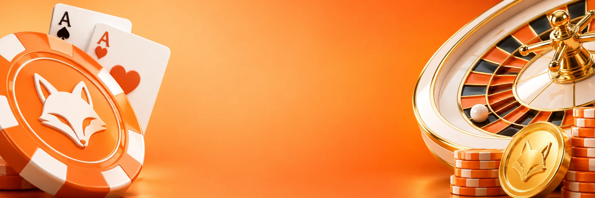

ZORRO
Club de día: la única en tema claro, cálida y cercana.
Lo propio: Misiones diarias y El Cofre
Slots y casino en vivo, en escritorio y celular. Tocá cualquier botón del diseño y te lleva a la pantalla que corresponde.

Club de día: la única en tema claro, cálida y cercana.
Lo propio: Misiones diarias y El Cofre